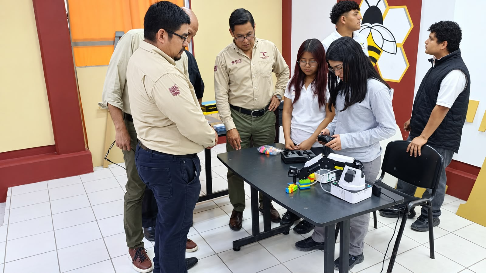
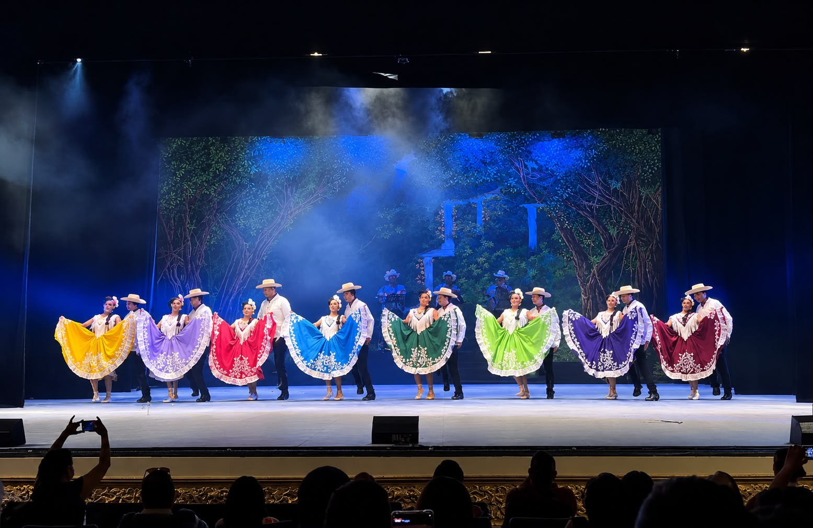
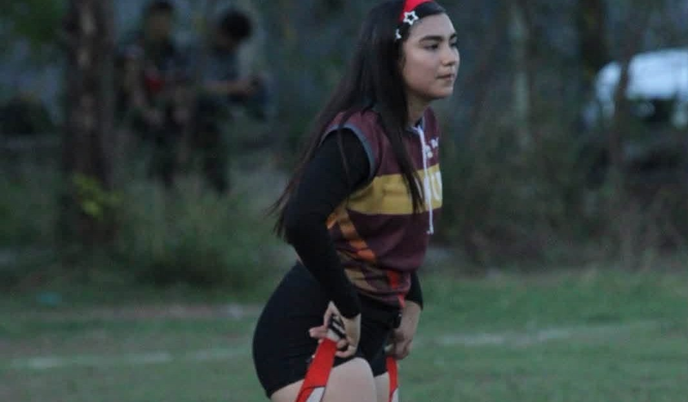
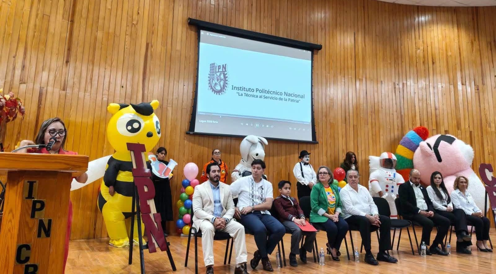
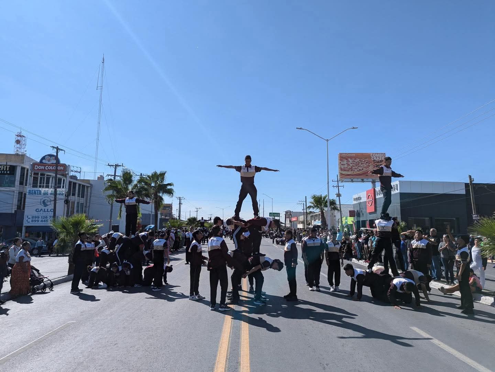
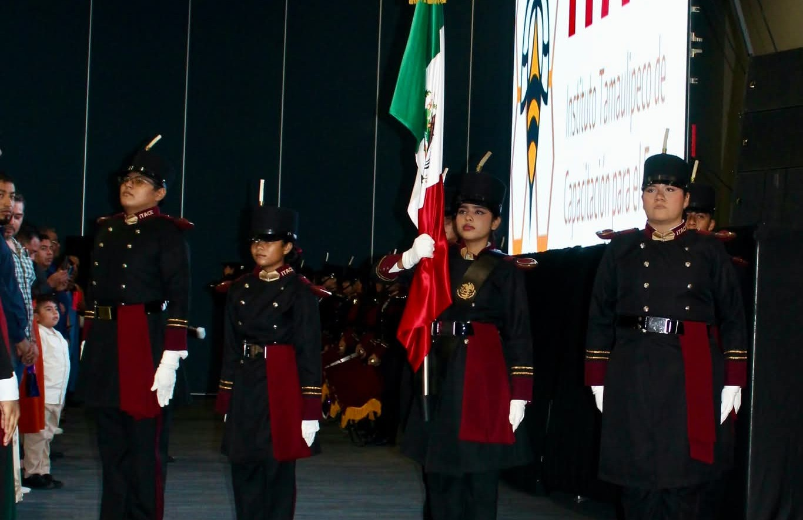
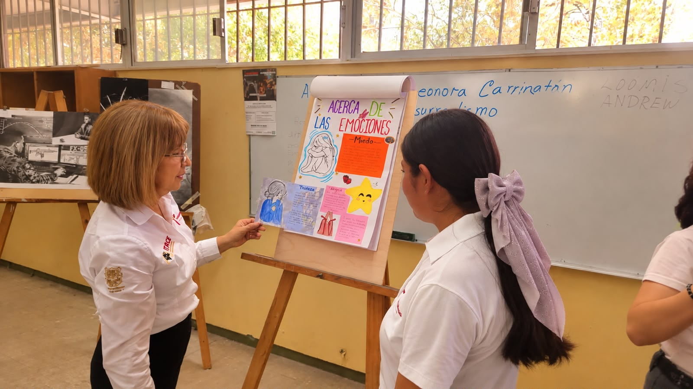
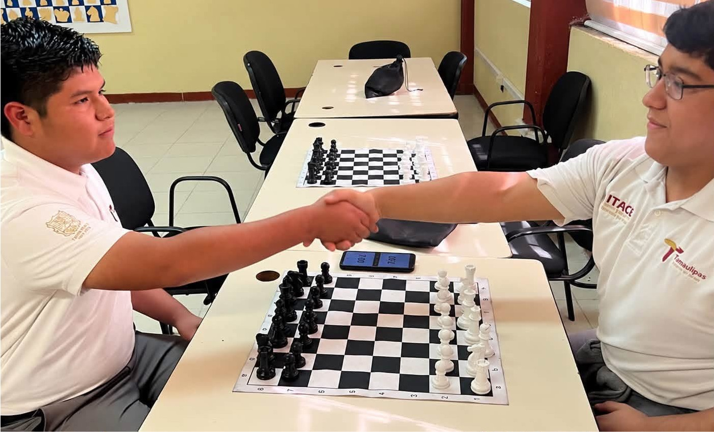
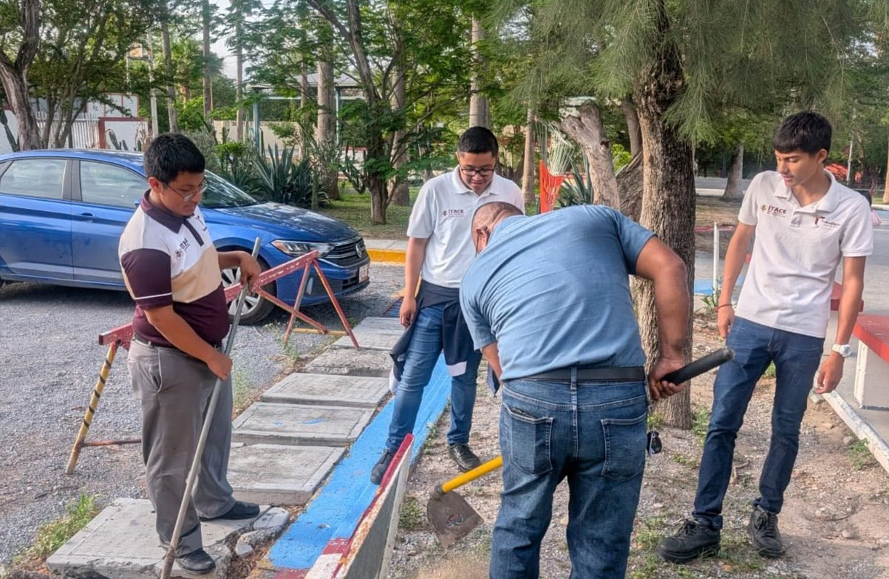

En el ITACE Reynosa, la vida estudiantil ofrece oportunidades para desarrollar habilidades, convivir con compañeros y participar en diferentes actividades escolares. Estas experiencias complementan la formación académica y contribuyen al crecimiento personal, social y profesional de los estudiantes.
La vida estudiantil combina el aprendizaje en las aulas y talleres con actividades que fomentan el trabajo en equipo, la responsabilidad, la creatividad y el compañerismo. También promueve valores como el respeto, la disciplina, la solidaridad y el compromiso con la comunidad escolar.
La comunidad educativa cuenta con espacios y oportunidades para aprender, practicar habilidades, participar en actividades culturales y deportivas, expresar talentos y fortalecer la convivencia. Estas experiencias permiten que los estudiantes desarrollen sus intereses y compartan sus conocimientos con los demás.

Talleres educativos
Los talleres permiten poner en práctica los conocimientos adquiridos en clase y desarrollar habilidades relacionadas con cada especialidad. Mediante ejercicios y actividades prácticas, los estudiantes conocen herramientas, procedimientos y técnicas que contribuyen a su preparación para el ámbito laboral.

Actividades culturales
Las actividades culturales favorecen la creatividad, la expresión y la convivencia entre los estudiantes. La danza y otras manifestaciones artísticas permiten compartir talentos, trabajar en equipo y conocer diferentes formas de expresión cultural dentro de la comunidad escolar.

Deportes
Las actividades deportivas fomentan la actividad física, la disciplina y el trabajo en equipo. La práctica del deporte también ayuda a desarrollar la perseverancia, el respeto por los compañeros y el cumplimiento de reglas, favoreciendo una convivencia saludable.

Convivencia escolar
Los espacios comunes permiten que los estudiantes conversen, compartan experiencias y convivan con compañeros de distintos grupos. Estos momentos forman parte de la vida cotidiana del plantel y contribuyen a fortalecer las relaciones personales y el respeto entre integrantes de la comunidad educativa.

Comunidad estudiantil
La comunidad estudiantil se construye mediante el respeto, la colaboración y el sentido de pertenencia a la institución. La participación de los alumnos contribuye a crear un ambiente en el que se promueven el compañerismo, la inclusión y el apoyo entre quienes comparten la experiencia escolar.

Banda de Guerra
La Banda de Guerra es una actividad cívica que requiere disciplina, coordinación, constancia y trabajo en equipo. Sus integrantes practican movimientos y toques para participar en ceremonias y actos escolares, fortaleciendo la responsabilidad, el respeto por los símbolos patrios y el compromiso institucional.

Escolta y ceremonias cívicas
La escolta participa en ceremonias cívicas y honores a la bandera, actividades que requieren coordinación, puntualidad y responsabilidad. Estas experiencias fomentan la disciplina, el trabajo en equipo y el respeto por los símbolos patrios, además de fortalecer los valores ciudadanos entre los estudiantes.

Eventos escolares
Los eventos escolares reúnen a estudiantes y docentes en actividades que favorecen la participación y la convivencia. Durante estas ocasiones, los alumnos pueden compartir logros, mostrar habilidades, colaborar con sus compañeros y crear experiencias significativas durante su formación académica.

Formación premilitar
Las actividades de formación premilitar pueden fomentar la disciplina, la responsabilidad, la puntualidad y el trabajo en equipo. Mediante ejercicios de coordinación y prácticas organizadas, los participantes desarrollan el respeto, el compromiso y la colaboración. Esta descripción debe ajustarse a las actividades que realmente se realizan en el plantel.

Escolta escolar
La escolta escolar representa una participación importante en las ceremonias cívicas del plantel, especialmente durante los honores a la bandera. Sus integrantes desarrollan disciplina, coordinación, puntualidad y responsabilidad mediante la práctica de movimientos y formaciones. Esta actividad fortalece el trabajo en equipo,
el respeto por los símbolos patrios y el compromiso con los valores cívicos.

Dibujo y expresión artística
El dibujo permite desarrollar la creatividad, la observación y la expresión de ideas mediante imágenes. A través de diferentes técnicas, los estudiantes pueden representar objetos, personas, paisajes y conceptos, además de fortalecer su capacidad para comunicar visualmente sus ideas y desarrollar su imaginación.

Ajedrez y estrategia
El ajedrez es una actividad que estimula el pensamiento lógico, la concentración y la planificación. A través de cada partida, los estudiantes aprenden a analizar situaciones, anticipar movimientos y tomar decisiones. También fomenta la paciencia, el respeto por las reglas y la sana convivencia entre compañeros.

Exposiciones estudiantiles
Las exposiciones permiten presentar proyectos, compartir conocimientos y demostrar las habilidades adquiridas durante la formación académica. También ayudan a fortalecer la comunicación, la organización y la colaboración entre estudiantes, al brindarles la oportunidad de explicar sus trabajos ante otras personas.

Cuidado del entorno escolar
El cuidado de los espacios escolares es una responsabilidad compartida que contribuye a mantener un ambiente limpio, ordenado y agradable. La participación en estas actividades fomenta el respeto por las instalaciones, la colaboración y el compromiso con el bienestar de la comunidad educativa.